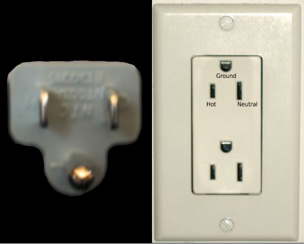

Random tech links
This is an archived post
Previous
Index
Next
Why three prongs?
June 4 2012, 1:33 AM
by Alexey Shamrin

Why three prongs?
- fascinating story about US (
NEMA
) Power Plug and grounding issues. Via
HN
.
Tags
hardware
19 views and 0 responses